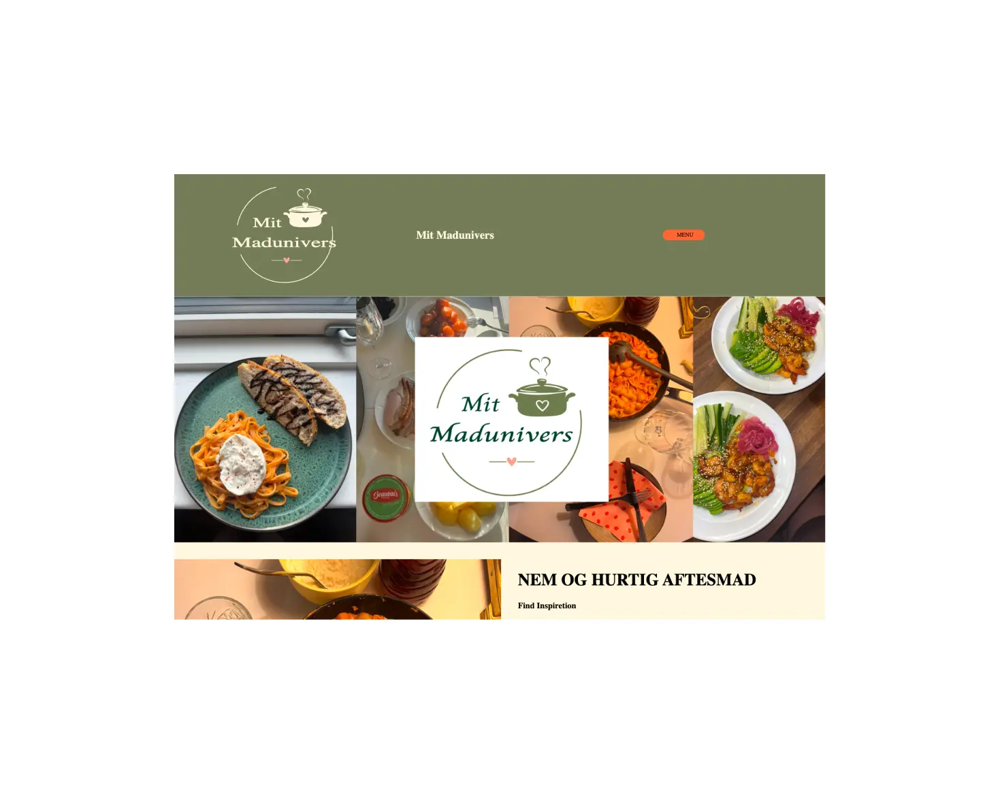
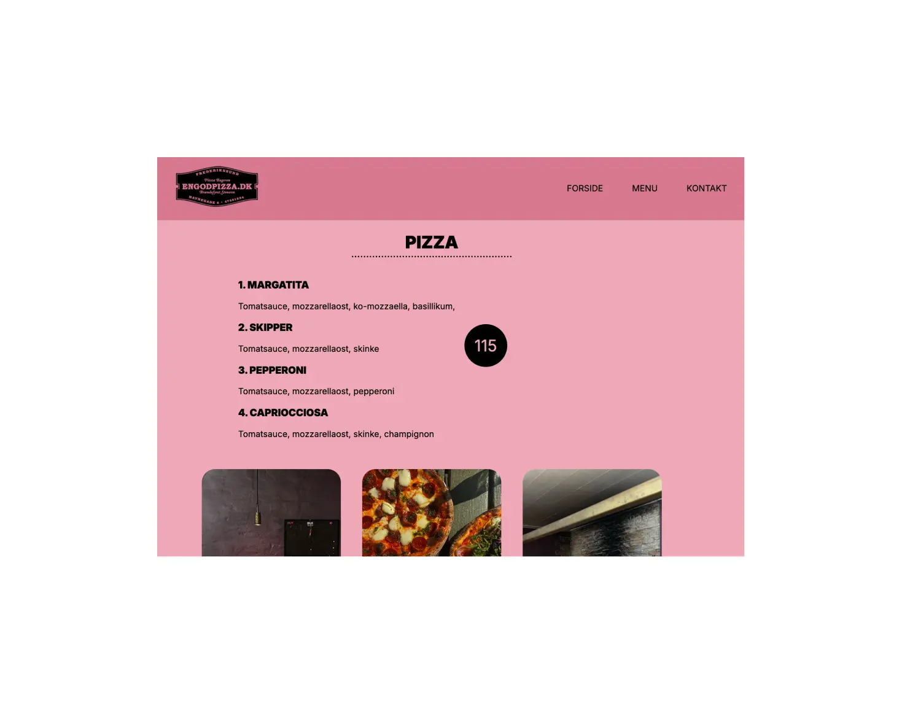

TEMA 5 - GRUNDLÆGGENDEINDHOLD


Løsning
På tema 5 lage vi den første uge ud med med at lave et sandkasse site. Et site som vi selv måtte vælge et emne til, men et layout som vi fik tildelt.
De resterende uger har vi i grupper skulle redesigne en virksomheds hjemmeside.
Process
Jeg valgte at lave sandkassesitet som en madopskift hjememside. Jeg fik AI til at lave et logo for mig, som jeg kom ind i adobe illustrator, og tegnede ud fra det selv logoet. Udover det brugte jeg billeder jeg selv havde taget.
Vi kontaktede virksomheden "En god pizza" for at høre om vi måtte redesigne deres hjemmeside, hvilket vi fik et ja til. Vi startede ud med at lave styletiles, moodboards og prototyper for at give os selv et billede af hvad vi ønskede, når vi begyndte at kode. Vi var så heldige at få lov til at komme ud hos virksomheden for at tage billeder vi kunne bruge på vores site.
Reflektion
Jeg blev ikke 100 procent færdig med sandkassesitet, og er derfor ikke tilfreds med hvordan slutresultat er blevet.
Virksomhedssitet syntes jeg faktisk vi er nået godt i mål med, og vi har arbejdet super godt sammen, for at nå i mål. Jeg vil dog sige at jeg er en person som har rigtig svært ved at ligge kontrollen fra mig, når vi er flere om det. Så jeg har derfor nogle småting jeg stadig ville ændre på siden.